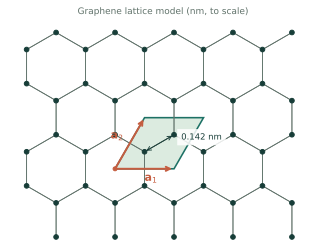
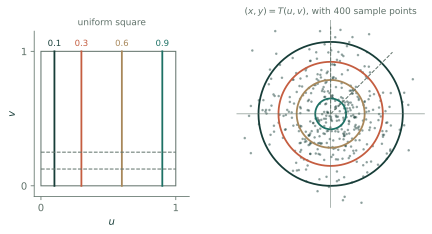

Map rectangles and squares edge by edge under linear, polar, and nonlinear maps
Decide whether a map is one-to-one and onto, with an inverse or a counterexample
Compute Jacobians, including the polar factor r, and use |J| as the local area scale
Change variables in a double integral, transforming the region, integrand, and area element together
Choose between forward and inverse Jacobians and check the hypotheses of the theorem
Formulas
\(\iint_D f\,dx\,dy=\iint_{D^*}f(T(u,v))\,\left|\dfrac{\partial(x,y)}{\partial(u,v)}\right|du\,dv\), when \(T\) is \(C^1\) and one-to-one from \(D^*\) onto \(D\) except possibly on a set of zero area
\(\dfrac{\partial(x,y)}{\partial(u,v)}=x_uy_v-x_vy_u\); for the inverse map, \(\dfrac{\partial(u,v)}{\partial(x,y)}=1\Big/\dfrac{\partial(x,y)}{\partial(u,v)}\) at corresponding points
A linear map \(T(\mathbf u)=A\mathbf u\) multiplies every area by \(|\det A|\); in polar coordinates, \(dA=r\,dr\,d\theta\)
Entering answers
Type numbers or formulas: fractions, decimals, pi, e, sqrt(...), sin(...), cos(...), exp(...), log(...). Use ^ for powers and radians for angles; separate vector components with commas.
Any equivalent form is accepted: 3/2, 1.5, and 6/4 are all the same answer, and so are (4/3)pi r^3 and 4 pi r^3/3.
Decimals must be correct to two decimal places (answers smaller than 0.1 need two significant digits). Exact forms such as 6pi sqrt(37) are always fine.
LaTeX such as \frac{1}{2}, \sqrt{2}, \pi, and \phi also works. A potential function may differ from ours by a constant. Units are shown beside each box.
Hints and solutions are built into the page, and nothing you type is sent anywhere: your answers and notes stay in this browser. This is an ungraded practice site.
Seen from the air, the farmland of western Kansas is covered with green circles. Each circle is watered by a center pivot: a long sprinkler pipe on wheels that rotates around a well at its center. Center pivots water about 90% of the irrigated acreage in Kansas. As the pipe turns, each nozzle along it sweeps out a ring of the field. The outer nozzles sweep much larger rings than the inner ones, so the nozzles cannot all be the same size. How much water must each nozzle deliver so that the whole field gets the same depth, and what share of the water goes to the outer half of the pipe?
Building the model
1From the real world
Irrigated area in the published worked example: \(128\) acres, where \(1\) acre \(=43{,}560\) ft2
System flow in the same worked example: \(650\) gallons per minute (gpm)
Share of Kansas irrigated acreage watered by center pivots (published estimate): about 90%
The irrigated area is one full circle of radius \(L\), so \(\pi L^2=128\times43{,}560\) ft2 and \(L\approx1332\) ft. A pivot that skips a wedge of the field would need a different \(L\).
Every part of the field receives the same depth of water. This is the goal the nozzle sizes are chosen for; runoff can spoil it.
Nozzles are spaced \(10\) ft apart, and each waters a ring \(10\) ft wide centered on it. This spacing keeps the arithmetic simple; each nozzle’s flow is proportional to the spacing chosen.
The pipe turns once every \(24\) hours. Only the one-hour sketch uses this; the flows do not depend on it.
3So the model is
Polar map \(T(r,\theta)=(r\cos\theta,\ r\sin\theta)\) on \(D^*=[0,L]\times[0,2\pi]\)
\(r\) (ft): distance from the pivot along the pipe; \(\theta\) (radians): angle of the pipe, counterclockwise from the positive \(x\)-axis seen from above; \(L\approx1332\) ft: length of the pipe
For uniform depth, the flow (gpm) each part of the pipe needs is proportional to the area it waters
The polar map \(T\) sends the rectangle \(D^*\) in the \((r,\theta)\)-plane (left) onto the circular field (right). The shaded rectangle \([1100,L]\times[0,\pi/12]\) is the ground the outer span waters in one hour; matching colors show where each of its edges goes.
First, on paper
With your group, on paper or a shared whiteboard, work down this list before typing any answers. Items marked “Before (b)” set up that part; “After (c)” items check it.
Sketch the image under \(T\) of \([1100,L]\times[0,\pi/12]\), the ground the outer span waters in one hour. Say what each edge becomes, and mark where along the pipe a nozzle must deliver the most water.
After (a): Explain why the points where \(T\) is not one-to-one do not spoil \(\iint_D dA=\int_0^{2\pi}\!\int_0^L r\,dr\,d\theta\).
Before (b): Compute \(\partial(x,y)/\partial(r,\theta)\) from the \(2\times2\) determinant, and say what this stretch factor means for a thin ring of the field.
Before (c): Predict: does the outer half of the pipe water more than, less than, or exactly half of the field? Why?
Whiteboard kit ↓One image with this problem’s figure, model, checklist, formulas, and parts (a)–(c). Paste it, or crop pieces of it, onto your group’s shared whiteboard.
aWhere is the polar map \(T\) not one-to-one on \(D^*=[0,L]\times[0,2\pi]\)? Choose the inputs \((r,\theta)\) that have the same image as some other input.
A step in the right direction
Lines \(r=\) const become circles and lines \(\theta=\) const become spokes. Follow each colored edge of \(D^*\) the same way, and look for edges that land on the same points.
bThe nozzle at distance \(r\) ft from the pivot waters the ring \(r-5\le\rho\le r+5\) ft. Here \(\rho\) (ft) is distance from the pivot, used as the variable of integration. For uniform depth, the nozzle’s flow is the system flow times (ring area)/(field area). Enter the nozzle’s flow in gallons per minute as a function of r.
A step in the right direction
The polar map wraps the strip \(r-5\le\rho\le r+5\), \(0\le\theta\le2\pi\) around the pivot into the ring; each small piece of the ring has area \(\rho\,d\rho\,d\theta\), not \(d\rho\,d\theta\).
cWhat fraction of the total flow, a number between 0 and 1, goes to the nozzles on the outer half of the pipe, \(L/2\le r\le L\)?
A step in the right direction
Each half of the pipe gets water in proportion to the area it waters, \(\int r\,dr\) over its half: compare the two shaded areas under the line.
View full solution +
Follow the reasoning
Image of the outer span: The pipe turns \(2\pi/24=\pi/12\) radians in one hour, and \(L=\sqrt{128\cdot43{,}560/\pi}\approx1332\) ft. The edge \(r=1100\) becomes an arc of radius 1100 ft and the edge \(r=L\) an arc of radius \(L\), both through \(15^\circ\). The edge \(\theta=0\) becomes the radial segment from 1100 ft to \(L\) on the positive \(x\)-axis, and the edge \(\theta=\pi/12\) becomes the matching segment at \(15^\circ\). The image is a curved wedge of an annulus, with area \(\tfrac{\pi}{24}(L^2-1100^2)\approx73{,}900\) ft2.
Where \(T\) is not one-to-one: The whole edge \(r=0\) collapses to the pivot, and the edges \(\theta=0\) and \(\theta=2\pi\) land on the same spoke. Everywhere else \(T\) is one-to-one. The repeated points form a single point and a segment, which have zero area, so the Change of Variables Theorem still gives \(\iint_D dA=\int_0^{2\pi}\!\int_0^L r\,dr\,d\theta\). Equivalently, delete those edges from \(D^*\) and nothing changes.Only the edge \(r=0\) (sent to one point) and the edges \(\theta=0\), \(\theta=2\pi\) (sent to one spoke) are repeated; a point and a segment have zero area.
Jacobian: \(\dfrac{\partial(x,y)}{\partial(r,\theta)}=\det\begin{pmatrix}\cos\theta&-r\sin\theta\\\sin\theta&r\cos\theta\end{pmatrix}=r\cos^2\theta+r\sin^2\theta=r\). This stretch factor says that a thin ring of width \(\Delta r\) at distance \(r\) has area about \(2\pi r\,\Delta r\), which grows in proportion to \(r\).
Flow of one nozzle: The nozzle at distance \(r\) waters \(\int_0^{2\pi}\!\int_{r-5}^{r+5}\rho\,d\rho\,d\theta=20\pi r\) ft2 of the \(128\cdot43{,}560\) ft2 field. So it needs \(650\cdot20\pi r/(128\cdot43{,}560)\approx0.00732\,r\) gpm, which is linear in \(r\): about 9.5 gpm at 1300 ft but only 0.7 gpm at 100 ft.
Outer half: The outer half of the pipe gets \(\int_{L/2}^L r\,dr\Big/\int_0^L r\,dr=\dfrac{L^2-L^2/4}{L^2}=\dfrac34\) of the water, because the factor \(r\) gives the outer rings more weight. This settles the prediction: the outer half of the pipe waters more than half of the field, three quarters of it, and must deliver about 490 of the 650 gpm.Flow grows in proportion to \(r\), so the outer half of the pipe waters three quarters of the field and delivers about 490 of the 650 gpm.
Model check: The nozzle flows add up to the published system flow. With one nozzle every 10 ft, the total is about \(\tfrac1{10}\int_0^L0.00732\,r\,dr=0.00732\,L^2/20\approx650\) gpm. Every flow is positive and grows outward, as the sketch suggested. The share \(\tfrac34\) rests on the full circle and the uniform depth, not on the 24-hour turn or the 10 ft spacing. Uniform depth is the assumption most at risk: if the soil at the outer edge cannot absorb water as fast as those nozzles deliver it, the extra runs off.
Final answers
a. All inputs with \(r=0\) (they all give the pivot), and each pair \((r,0)\), \((r,2\pi)\) (the same spoke).
b.\(\frac{325 \pi r}{139392}\) gpm
c.\(\frac{3}{4}\)
Discussion
Because the area element is r dr dθ, the ring a nozzle waters grows in proportion to its distance r from the pivot. In one revolution a nozzle at radius r waters a ring of area 2πr times its width, and all nozzles finish their rings in the same time, so the outer nozzles must deliver water at a rate proportional to r. If the soil cannot absorb water that fast, the extra runs off, which is why runoff shows up at the outer edge first.
Think it through
The published guide says runoff problems usually appear at the outer edge of a pivot. Use the Jacobian factor \(r\) to explain why the outer nozzles must put water on the ground faster.
Saved on this browser · Discussion prompt, not automatically graded
Graphene is a single layer of carbon atoms arranged in a honeycomb pattern. Andre Geim and Konstantin Novoselov in Manchester peeled such layers off graphite, the material in pencil lead, and they won the 2010 Nobel Prize in Physics for it. The Nobel committee pictured a 1 m² graphene hammock that could hold a cat yet weigh less than one of the cat’s whiskers. The honeycomb is built by repeating one tile, the unit cell, which holds two atoms. How much area does one tile cover, and how many carbon atoms does the hammock hold?
Building the model
1From the real world
Carbon–carbon distance (published): \(0.142\) nm
Carbon atoms per unit cell (published): two
Mass per area of the sheet (published): \(0.77\) mg/m2
The graphene sheet is a perfect, flat lattice with no defects. The counts below are for this ideal sheet; missing atoms or wrinkles in a real sheet would change them.
3So the model is
Lattice spacing \(a=\sqrt3\times0.142\) nm \(\approx0.246\) nm: the side of the unit cell, derived from the published carbon–carbon distance
Lattice vectors \(\mathbf a_1=(a,0)\) and \(\mathbf a_2=(\tfrac a2,\tfrac{\sqrt3}{2}a)\), in nm: the two steps that carry one cell onto its neighbors
Linear map \(T(u,v)=u\,\mathbf a_1+v\,\mathbf a_2\), where the lattice coordinates \(u\), \(v\) have no units; the unit cell is \(T([0,1]^2)\)

The graphene model: carbon atoms (dots) \(0.142\) nm apart, the lattice vectors \(\mathbf a_1\) and \(\mathbf a_2\), and one unit cell \(T([0,1]^2)\) (shaded), which contains two atoms.
First, on paper
With your group, on paper or a shared whiteboard, work down this list before typing any answers. Items marked “Before (b)” set up that part; “After (c)” items check it.
Map the corners of the unit square under \(T\), sketch the cell \(T([0,1]^2)\), and write the matrix \(A\) of \(T\). Is \(\det A>0\), so that \(T\) keeps the counterclockwise order of \(\mathbf a_1\), \(\mathbf a_2\)?
Before (a): Predict: is the cell’s area more or less than \(a^2\), the area of a square with the same side? Why?
After (a): Count the carbon atoms in a 1 m² hammock, using the cell area from (a).
Before (b): Show that the cell’s four sides, \(y=0\), \(y=\tfrac{\sqrt3}{2}a\), \(y=\sqrt3\,x\), and \(y=\sqrt3\,(x-a)\), become the sides of the unit square in \((u,v)\).
After (b): Explain why \(T\) is one-to-one and onto \(\mathbb R^2\). Compute \(\partial(u,v)/\partial(x,y)\) for \(T^{-1}\) and check that it equals \(1/\det A\).
Whiteboard kit ↓One image with this problem’s figure, model, checklist, formulas, and parts (a)–(c). Paste it, or crop pieces of it, onto your group’s shared whiteboard.
aFind the area, in nm², of one unit cell of graphene, the image of the unit square under T.
A step in the right direction
\(T\) sends the unit square (area 1) onto the rhombus spanned by \(\mathbf a_1\) and \(\mathbf a_2\); its area is \(|\det A|\), which is also its base \(a\) times its height.
bMeasure \(x\) and \(y\) in units of \(a\), so that \(a=1\). Enter the inverse map \(T^{-1}(x,y)=(u,v)\), which gives the lattice coordinates of the point \((x,y)\).
A step in the right direction
Every point is \(u\,\mathbf a_1+v\,\mathbf a_2\): read \(v\) from the height \(y=\tfrac{\sqrt3}{2}v\), then take away the sideways shift \(v/2\) of the step \(v\,\mathbf a_2\) to find \(u\).
cWhich of these maps is not one-to-one on the whole plane?
A step in the right direction
The lattice map sends the grid to a slanted grid that never folds over itself, so each output comes from exactly one input. Ask the same of \(S\), \(F\), and \(G\): can two different inputs give the same output?
View full solution +
Follow the reasoning
Corners and matrix: \(a=\sqrt3\times0.142\approx0.2460\) nm. The map \(T(u,v)=u\,\mathbf a_1+v\,\mathbf a_2\) has matrix \(A=\begin{pmatrix}a&a/2\\0&\tfrac{\sqrt3}{2}a\end{pmatrix}\). The corners go to \((0,0)\mapsto(0,0)\), \((1,0)\mapsto(a,0)\), \((1,1)\mapsto(\tfrac32a,\tfrac{\sqrt3}{2}a)\), and \((0,1)\mapsto(\tfrac a2,\tfrac{\sqrt3}{2}a)\), so the cell is a rhombus with \(60^\circ\) and \(120^\circ\) angles.
Cell area: The unit square has area 1, so the cell has area \(\det A=\tfrac{\sqrt3}{2}a^2=\tfrac{3\sqrt3}{2}(0.142)^2\approx0.0524\) nm2, which matches the published 0.052 nm2. This settles the prediction: the area is less than \(a^2\), because the rhombus leans over, so its height \(\tfrac{\sqrt3}{2}a\) is shorter than its side. The determinant is positive, so \(T\) keeps orientation.The cell and the square of side \(a\) share a base, but the cell is only \(\tfrac{\sqrt3}{2}a\) tall: \(0.0524\) nm2 against \(a^2\approx0.0605\) nm2.
Atoms in the hammock: One cell covers \(0.0524\) nm\(^2=5.24\times10^{-20}\) m2 and holds two atoms, so 1 m2 holds \(2/(5.24\times10^{-20})\approx3.8\times10^{19}\) atoms.
Inverse, one-to-one, and onto: With \(a=1\), solving \(y=\tfrac{\sqrt3}{2}v\) gives \(v=2y/\sqrt3\), and then \(x=u+v/2\) gives \(u=x-y/\sqrt3\). This formula works for every \((x,y)\), so \(T\) is onto, and it gives only one \((u,v)\), so \(T\) is one-to-one. Substituting it, the lines \(y=0\) and \(y=\tfrac{\sqrt3}{2}\) become \(v=0\) and \(v=1\), and the lines \(y=\sqrt3x\) and \(y=\sqrt3(x-1)\) become \(u=0\) and \(u=1\). The inverse has \(\partial(u,v)/\partial(x,y)=1\cdot\tfrac{2}{\sqrt3}-(-\tfrac1{\sqrt3})\cdot0=\tfrac{2}{\sqrt3}\), which is \(1/\det A\) because \(\det A=\tfrac{\sqrt3}{2}\) when \(a=1\).
Which map fails: \(S\) has inverse \(u=\tfrac{x+y}2\), \(v=\tfrac{x-y}2\), and \(G\) has inverse \(u=x\), \(v=y-x^3\). The lattice map \(T\) is one-to-one by the previous step. Only \(F\) fails, because \(F(1,0)=F(-1,0)=(1,0)\).\(T\), \(S\), and \(G\) keep the two halves of the square apart; \(F\) folds them onto each other, because \(F(u,v)=F(-u,v)\).
Model check: Two standard constants, the molar mass of carbon (about 12 g per mole) and Avogadro’s number (\(6.02\times10^{23}\) atoms per mole), give each carbon atom a mass of about \(2.0\times10^{-23}\) g. So \(3.8\times10^{19}\) atoms weigh about \(7.6\times10^{-4}\) g \(=0.76\) mg, within about 1% of the published density of 0.77 mg/m2: the hammock weighs less than a milligram. The perfect, flat lattice is the assumption that matters most: missing atoms or wrinkles in a real sheet would change the count.
The cell area would grow by about 2%, and the number of atoms per square meter would fall by about 2%. Stretching by 1.01 in every direction follows T by the linear map that multiplies every vector by 1.01, whose determinant is 1.01² = 1.0201, so every cell gains about 2% in area. Each cell still holds two atoms, so a square meter of stretched sheet holds 1/1.0201 ≈ 0.98 times as many atoms as before.
Think it through
What if the sheet were stretched evenly by 1% in every direction, so that both lattice vectors grow by the factor 1.01? How would the area of one cell and the number of atoms per square meter change?
Saved on this browser · Discussion prompt, not automatically graded
In July 2020, comet NEOWISE was a naked-eye sight in the evening and morning skies of the Northern Hemisphere. Early that month it passed perihelion, the point of its orbit closest to the Sun, well inside Earth’s orbit. It then headed back out on an orbit so stretched that it is almost a parabola. By Kepler’s second law, the line from the Sun to the comet sweeps out area at a constant rate, so the time that passes is proportional to the area swept. A map due to Levi-Civita turns such orbits into straight lines, which makes that area easy to compute. How many days after perihelion was the comet as far from the Sun as Earth is, 1 astronomical unit (1 AU, about 150 million km)?
Building the model
1From the real world
Perihelion distance of NEOWISE (JPL orbit solution): \(0.29465\) AU, rounded to \(q=0.2947\) AU
Eccentricity (JPL orbit solution): \(0.99918\); a parabola has eccentricity exactly 1
The orbit is an exact parabola with the Sun at its focus. This is close to the published eccentricity and works near the Sun; far from the Sun the real ellipse and the parabola part ways.
The pulls of the planets are ignored, so only the Sun acts on the comet. This is checked against JPL in the solution.
By Kepler’s second law, the Sun–comet line sweeps area at the constant rate \(\pi\sqrt{2q}\) AU2 per year, the sweep rate (using \(GM_\odot=4\pi^2\) AU3/yr2, its value in these units).
One year is \(365.25\) days.
3So the model is
Sun at the origin, perihelion at \((q,0)\), distances \(x\), \(y\) in AU; after perihelion the comet moves into \(y>0\), counterclockwise about the Sun
Levi-Civita map \(T(u,v)=(u^2-v^2,\ 2uv)\) from the \(uv\)-plane to the \(xy\)-plane, with \(u\), \(v\) in \(\sqrt{\text{AU}}\) so that \(x\), \(y\) come out in AU
Swept region \(D\): the area the Sun–comet line sweeps from perihelion until the comet is \(1\) AU from the Sun, bounded by the Sun–perihelion segment, the orbit, and the final Sun–comet segment
Left: the line \(u=\sqrt q\) in the \(uv\)-plane. Right: its image under \(T\), the comet’s parabola with the Sun at its focus, together with the 1 AU circle (dashed) and the region \(D\) swept from perihelion until the comet is 1 AU from the Sun.
First, on paper
With your group, on paper or a shared whiteboard, work down this list before typing any answers. Items marked “Before (b)” set up that part; “After (c)” items check it.
Sketch the image of each edge of the unit square \([0,1]^2\), eliminating the parameter on the two parabolic edges. Check that the line \(u=\sqrt q\) becomes the comet’s orbit.
Show that \(T(-u,-v)=T(u,v)\): is \(T\) one-to-one on the plane? With \((u,v)=(\varrho\cos\psi,\varrho\sin\psi)\), show that \(T\) squares the radius and doubles the angle, so it is one-to-one on the first quadrant and sends rays to rays.
Before (b): Predict: is the area of \(T([0,1]^2)\) more or less than 1? Near which corner does \(T\) shrink area, and near which does it stretch it?
Before (c): Find the vertices and sides of the region \(D^*\) that \(T\) maps onto \(D\), and choose an order of integration.
Before (c): State the hypotheses of the Change of Variables Theorem and check each one.
Whiteboard kit ↓One image with this problem’s figure, model, checklist, formulas, and parts (a)–(c). Paste it, or crop pieces of it, onto your group’s shared whiteboard.
aEnter the Jacobian \(\dfrac{\partial(x,y)}{\partial(u,v)}\) of the Levi-Civita map \(T(u,v)=(u^2-v^2,\ 2uv)\) as a function of u and v.
A step in the right direction
A small square of area \(\Delta u\,\Delta v\) becomes a near-parallelogram with sides \((x_u,y_u)\,\Delta u\) and \((x_v,y_v)\,\Delta v\), so its area is \(|x_uy_v-x_vy_u|\,\Delta u\,\Delta v\).
bFind the area, in AU², of the image \(T([0,1]^2)\) of the unit square.
A step in the right direction
\(T\) is one-to-one on the square, so the area of the shaded image is \(\int_0^1\!\int_0^1 J\,du\,dv\) with \(J\) from (a); you never need the curved edges.
cUsing the area of \(D\) and Kepler’s second law (the sweep rate \(\pi\sqrt{2q}\) AU2 per year), find how many days after perihelion the model comet is 1 AU from the Sun.
A step in the right direction
The area of \(D\) is \(\iint_{D^*}4(u^2+v^2)\,du\,dv\) over the triangle \(D^*\): on each vertical slice \(v\) runs from \(0\) to \(ku\), and \(u\) runs from \(0\) to \(\sqrt q\).
View full solution +
Follow the reasoning
Edges of the unit square: The edge \(v=0\) goes to \((u^2,0)\), the segment \([0,1]\) of the \(x\)-axis, and the edge \(u=0\) goes to \((-v^2,0)\), the segment \([-1,0]\). On the edge \(u=1\), \(x=1-v^2\) and \(y=2v\), which gives \(x=1-y^2/4\). On the edge \(v=1\), \(x=u^2-1\) and \(y=2u\), which gives \(x=y^2/4-1\). Both parabolas run over \(0\le y\le2\) and have their focus at the origin, where the Sun sits. In general the line \(u=c\) goes to \(x=c^2-y^2/(4c^2)\), a parabola with focus at the origin and vertex \((c^2,0)\). So \(u=\sqrt q\) goes to the comet’s orbit, with perihelion \((q,0)\).Each line \(u=c\) becomes a parabola \(x=c^2-y^2/(4c^2)\) with focus at the Sun and vertex \((c^2,0)\); the line \(u=\sqrt q\) becomes the comet’s orbit.
Not one-to-one, but square and double: \(T(-u,-v)=((-u)^2-(-v)^2,\,2(-u)(-v))=T(u,v)\), so every point except the origin has two preimages, and \(T\) is not one-to-one on \(\mathbb R^2\). In polar form, \(u^2-v^2=\varrho^2\cos2\psi\) and \(2uv=\varrho^2\sin2\psi\), so \(T\) squares the radius and doubles the angle. On the first quadrant \(0\le\psi\le\pi/2\), the doubled angle covers \([0,\pi]\) only once, so \(T\) is one-to-one there, and it sends the ray at angle \(\psi\) to the ray at angle \(2\psi\).
Jacobian and area: \(J=(2u)(2u)-(-2v)(2v)=4(u^2+v^2)\), which is positive except at the origin. Because \(T\) is one-to-one on the square, the area of its image is \(\int_0^1\!\int_0^1 4(u^2+v^2)\,du\,dv=\tfrac43+\tfrac43=\tfrac83\) AU2. This settles the prediction: the area is more than 1, because \(T\) shrinks area only where \(u^2+v^2<\tfrac14\), near the corner \((0,0)\), and stretches it up to eightfold near \((1,1)\).\(T\) shrinks area only inside the quarter circle \(J=1\), where \(u^2+v^2<\tfrac14\), and stretches it up to eightfold near \((1,1)\), so the image has area \(\tfrac83\) AU2, more than 1.
The region \(D^*\) and the hypotheses: The squared distance from the Sun is \(x^2+y^2=(u^2+v^2)^2\), so the distance is \(u^2+v^2\). On the orbit \(u=\sqrt q\), a distance of 1 AU gives \(v=\sqrt{1-q}\). The Sun–perihelion segment comes from \(v=0\), the orbit arc from \(u=\sqrt q\), and the Sun–comet segment from the ray \(v=ku\) with \(k=\sqrt{(1-q)/q}\). So \(D^*\) is the triangle with vertices \((0,0)\), \((\sqrt q,0)\), and \((\sqrt q,\sqrt{1-q})\), described by \(0\le u\le\sqrt q\), \(0\le v\le ku\); integrating in \(v\) first needs only one double integral. Hypotheses: \(T\) is \(C^1\), it is one-to-one on the first quadrant, \(T(D^*)=D\), and \(J\ne0\) except at one point.
Time to reach 1 AU: The area of \(D\) is \(\int_0^{\sqrt q}\!\int_0^{ku}4(u^2+v^2)\,dv\,du=\int_0^{\sqrt q}4u^3(k+k^3/3)\,du=q^2(k+k^3/3)=\tfrac{qk(2q+1)}{3}\), which is about \(0.2416\) AU2 for \(q=0.2947\). Dividing by the sweep rate \(\pi\sqrt{2q}\approx2.412\) AU2/yr gives \(0.1001\) yr \(\approx36.6\) days, so the model comet reaches 1 AU around August 9. JPL’s ephemeris gives 36.60 days, less than an hour later.
Model check: The time is positive and of a sensible size: \(D\) is about a tenth of the area swept in a year, so about a tenth of a year passes. JPL’s ephemeris follows the real, elliptical orbit, so the match within an hour shows that the simplifications cost very little this close to the Sun. The assumption that carries the most weight is the exact parabola: it works because the published eccentricity, 0.99918, is within 0.1% of a parabola’s eccentricity of 1.
Final answers
a.\(4 u^{2} + 4 v^{2}\)
b.\(\frac{8}{3}\) AU2
c.\(\frac{114.914312372045}{\pi}\) days
Discussion
Near the Sun the ellipse and the parabola are almost the same curve, traveled at almost the same speed; far from the Sun they part ways. The speed is set by v² = GM(2/r − 1/a). With a = q/(1 − e) ≈ 360 AU, the term 1/a ≈ 0.003 per AU is tiny next to 2/r ≥ 2 per AU, so inside 1 AU the two speeds differ by less than 0.1% and the sweep rates agree almost exactly. Far out, the parabola escapes to infinity, while the real comet turns around about 720 AU from the Sun and returns in some 6800 years.
Think it through
JPL’s ephemeris puts the real NEOWISE 1 AU from the Sun 36.60 days after perihelion, within an hour of the model. Yet the real orbit is an ellipse that takes about 6800 years to go around. Why does a parabola work so well here, and where would it fail badly?
Saved on this browser · Discussion prompt, not automatically graded
Problem 04Core
How a computer makes bell curves
Weather ensembles, bank stress tests, and simulated particle collisions all need random numbers that follow the bell-shaped normal distribution. A computer’s basic random number generator, however, only produces numbers spread evenly (uniformly) between 0 and 1. In 1958 George Box and Mervin Muller published a short recipe that turns two uniform numbers into two independent normal numbers. Geometrically, the recipe bends the unit square onto the whole plane so that the points pile up into a two-dimensional bell curve. It is a change of variables. Why does the recipe produce the bell curve, and how likely is a generated point to land within distance 2 of the center, two standard deviations out?
Building the model
1From the real world
Box–Muller method (published recipe): from uniform \(u,v\) in \((0,1)\), \(x=\sqrt{-2\ln u}\cos2\pi v\) and \(y=\sqrt{-2\ln u}\sin2\pi v\)
The computer’s numbers are truly random, so \((u,v)\) is spread uniformly over the unit square and the probability of a set of inputs equals its area. This is the standard idealization; the recipe also needs \(u>0\), because \(\ln0\) is undefined.
3So the model is
Box–Muller map \(T(u,v)=(x,y)\) on \((0,1]\times[0,1]\); \(u\) and \(v\) have no units
\(u\) sets the distance from the center, \(\sqrt{-2\ln u}\); \(v\) sets the direction, the angle \(2\pi v\) measured counterclockwise from the positive \(x\)-axis
Probability that \(T(u,v)\) lies in a region \(D\)\(=\) area of the set of inputs \((u,v)\) that land in \(D\)

The vertical lines \(u=0.9,\ 0.6,\ 0.3,\ 0.1\) in the square (left) become circles about the origin (right), and the dashed lines \(v=0.125\) and \(v=0.25\) become rays. The 400 sample points \(T(u,v)\) crowd near the origin and thin out farther away.
First, on paper
With your group, on paper or a shared whiteboard, work down this list before typing any answers. Items marked “Before (b)” set up that part; “After (c)” items check it.
Sketch where \(T\) sends the lines \(u=\) constant and \(v=\) constant, and mark where the generated points land densely. As \(u\) increases, does the image circle grow or shrink?
Before (a): Predict the sign of \(\partial(x,y)/\partial(u,v)\) from your sketch: does \(T\) keep or reverse the counterclockwise order of the \(u\)- and \(v\)-directions?
Write the inverse map using polar coordinates of \((x,y)\). Find where \(T\) fails to be one-to-one on \((0,1]\times[0,1]\), say why that is harmless, and describe \(T(u,v)\) as \(u\to0\).
Before (b): Explain why the chance that \(T(u,v)\) lands in \(D\) is the area of its preimage \(D^*\). Change variables to write that area as \(\iint_D|\partial(u,v)/\partial(x,y)|\,dx\,dy\).
After (c): Explain why \(X=\sigma_1x\), \(Y=\sigma_2y\) multiplies areas by \(\sigma_1\sigma_2\). Use it, then polar coordinates, to show that the “2-sigma” ellipse \(X^2/\sigma_1^2+Y^2/\sigma_2^2\le4\) has the same probability as the disk in (c).
Whiteboard kit ↓One image with this problem’s figure, model, checklist, formulas, and parts (a)–(c). Paste it, or crop pieces of it, onto your group’s shared whiteboard.
aEnter the forward Jacobian \(\dfrac{\partial(x,y)}{\partial(u,v)}\) of the Box–Muller map \(T\) as a function of u and v. Keep its sign: it may be negative.
A step in the right direction
Follow the \(u\)- and \(v\)-directions through \(T\): their images are the columns \((x_u,y_u)\) and \((x_v,y_v)\) of the Jacobian matrix, and whether the turn from the first to the second is counterclockwise or clockwise decides the sign.
bThe generated points \((x,y)\) have probability density (probability per unit area) \(\left|\dfrac{\partial(u,v)}{\partial(x,y)}\right|\). Using part (a), enter this density as a function of x and y.
A step in the right direction
The chance that a point lands in the patch \(\Delta A\) is the area of its preimage, about \(|\partial(u,v)/\partial(x,y)|\,\Delta A\); on the circle through the patch, \(x^2+y^2=-2\ln u\).
cWhat is the probability, a number between 0 and 1, that a generated point \((x,y)\) lies within distance 2 of the origin, that is, in the disk \(x^2+y^2\le4\)?
A step in the right direction
The disk of radius 2 is the image of a strip: all \(v\), and the \(u\) with \(\sqrt{-2\ln u}\le2\). Its probability is the area of that strip.
View full solution +
Follow the reasoning
Sketch: The line \(u=c\) goes to the circle of radius \(\sqrt{-2\ln c}\) about the origin, which shrinks as \(u\) grows, and the line \(v=c\) goes to the ray at angle \(2\pi c\). Thin strips near \(u=1\) land on small circles near the center, so the points crowd there.
Inverse map: Since \(x^2+y^2=-2\ln u\), the inverse is \(u=e^{-(x^2+y^2)/2}\) and \(v=\theta/(2\pi)\), where \(\theta\) is the polar angle of \((x,y)\). The map is one-to-one except that \(u=1\) sends every \(v\) to the origin and the edges \(v=0\) and \(v=1\) give the same ray. These sets have zero area, so they do not affect any integral. As \(u\to0\) the radius \(\sqrt{-2\ln u}\to\infty\), so the image is the whole plane and integrals over it are improper.
Forward Jacobian: With \(R=\sqrt{-2\ln u}\), \(x_u=-\dfrac{\cos2\pi v}{uR}\), \(x_v=-2\pi R\sin2\pi v\), \(y_u=-\dfrac{\sin2\pi v}{uR}\), and \(y_v=2\pi R\cos2\pi v\). So \(\dfrac{\partial(x,y)}{\partial(u,v)}=-\dfrac{2\pi}{u}(\cos^22\pi v+\sin^22\pi v)=-\dfrac{2\pi}{u}\). The minus sign settles the prediction: \(T\) reverses orientation, because increasing \(u\) moves a point inward while increasing \(v\) turns it counterclockwise. Area scaling uses \(2\pi/u\).The boundary traced counterclockwise in the \(uv\)-plane comes out clockwise: \(T\) reverses orientation, as \(\partial(x,y)/\partial(u,v)=-2\pi/u<0\) says.
Probability rule and density: The chance that \(T(u,v)\) lands in \(D\) is the area of the preimage \(D^*\). Changing variables, that area is \(\iint_D\left|\dfrac{\partial(u,v)}{\partial(x,y)}\right|dx\,dy\), so the density is the absolute value of the inverse Jacobian. By the reciprocal rule, \(\left|\dfrac{\partial(u,v)}{\partial(x,y)}\right|=\dfrac{u}{2\pi}=\dfrac{1}{2\pi}e^{-(x^2+y^2)/2}=\dfrac{e^{-x^2/2}}{\sqrt{2\pi}}\cdot\dfrac{e^{-y^2/2}}{\sqrt{2\pi}}\). This is a product of two standard normal densities, so \(x\) and \(y\) are two independent standard normal numbers.
Probability within distance 2: \(P=\iint_{x^2+y^2\le4}\dfrac{e^{-(x^2+y^2)/2}}{2\pi}\,dA=\int_0^{2\pi}\!\int_0^2\dfrac{e^{-r^2/2}}{2\pi}\,r\,dr\,d\theta=1-e^{-2}\approx0.865\). Equivalently, the preimage of the disk is the strip \(e^{-2}\le u\le1\), which has area \(1-e^{-2}\).The disk of radius 2 comes from the strip \(e^{-2}\le u\le1\), of area \(1-e^{-2}\approx0.865\); the sample agrees, with 348 of its 400 points inside.
The 2-sigma ellipse: The scaling \(X=\sigma_1x\), \(Y=\sigma_2y\) is a diagonal linear map with determinant \(\sigma_1\sigma_2\), so it multiplies areas by \(\sigma_1\sigma_2\), and it sends the disk \(x^2+y^2\le4\) onto the ellipse \(X^2/\sigma_1^2+Y^2/\sigma_2^2\le4\). The density of \((X,Y)\) is \(\dfrac{1}{2\pi\sigma_1\sigma_2}e^{-(X^2/\sigma_1^2+Y^2/\sigma_2^2)/2}\); changing variables multiplies it by \(\sigma_1\sigma_2\) and gives back the disk integral above, so the answer is again \(1-e^{-2}\). A two-dimensional “2-sigma” ellipse holds only 86.5% of the points, not the familiar one-dimensional 95%.The scaling \(X=\sigma_1x\), \(Y=\sigma_2y\) (here \(\sigma_1=1.6\), \(\sigma_2=0.6\)) carries the disk onto the 2-sigma ellipse, and every point with it, so the ellipse holds the same share, \(1-e^{-2}\).
Model check: The probability lies between 0 and 1, and the sample in the figure agrees: 348 of its 400 points, 87%, lie within distance 2. The density is positive everywhere and largest at the center, as the crowding of points shows. Everything rests on the assumption that \((u,v)\) is truly uniform: any unevenness in the computer’s numbers passes straight through \(T\) into the bell curve.
Because probability, like area, cannot be negative. The sign of the Jacobian only records that the map reverses orientation: it flips the square over as it bends it. Without the absolute value the density would be negative everywhere, and the total probability would come out as −1.
Think it through
The forward Jacobian in (a) is negative. Why does the probability density use its absolute value, and what would go wrong without it?
Saved on this browser · Discussion prompt, not automatically graded
Problem 05Extension
Why Greenland looks as big as Africa
On the familiar Mercator world map, Greenland looks about as large as Africa. Yet the Democratic Republic of the Congo alone, on the equator, is slightly larger than Greenland. A map projection sends each point of the globe, given by its longitude and latitude, to a point of a flat map. Gerardus Mercator designed his projection so that sailors could steer by straight lines, and that choice stretches areas near the poles. By how much does the Mercator map enlarge areas at Greenland’s latitude, and can a different map keep areas true?
Building the model
1From the real world
Surface area of Greenland (UN, land and inland water): \(2{,}166{,}086\) km2
Surface area of the Democratic Republic of the Congo (UN, land and inland water): \(2{,}344{,}858\) km2
Mercator projection, spherical form (Snyder): \(x=R\lambda\), \(y=R\ln\tan(\pi/4+\phi/2)\)
Cylindrical equal-area projection, spherical form (Snyder): \(x=R\lambda\), \(y=R\sin\phi\)
Earth is a sphere, as in the published spherical formulas. We take \(R=1\), which is safe because \(R\) cancels from every area ratio we compute.
All of Greenland is treated as lying at latitude \(72^\circ\) N, and all of DR Congo at the equator. This is the roughest assumption, since Greenland spans more than \(20^\circ\) of latitude.
3So the model is
Map \((\lambda,\phi)\mapsto(x,y)\) on \(-\pi<\lambda<\pi\), \(-\pi/2<\phi<\pi/2\), with longitude \(\lambda\) (east positive) and latitude \(\phi\) (north positive) in radians
Sphere area element (with \(R=1\)): \(\cos\phi\,d\lambda\,d\phi\); the factor \(\cos\phi\) says a patch near the poles is narrower than one at the equator
Areal scale factor: (map area)/(true area) of a small patch at latitude \(\phi\)
Mercator’s map with parallels every \(15^\circ\): equal steps in latitude take up more and more map height toward the poles. Shaded: the latitude bands of Greenland and of DR Congo; dashed: latitude \(72^\circ\) N.
First, on paper
With your group, on paper or a shared whiteboard, work down this list before typing any answers. Items marked “Before (b)” set up that part; “After (c)” items check it.
Sketch the Mercator grid near the equator and near \(72^\circ\) N (or use the figure), and mark where equal steps in latitude take up more map height.
Decide whether the Mercator map is one-to-one on \((-\pi,\pi)\times(-\pi/2,\pi/2)\), and say what happens to the poles.
Before (b): Explain why (map Jacobian)\(/\cos\phi\) is the map’s areal scale factor, using the sphere’s area element \(\cos\phi\,d\lambda\,d\phi\).
Before (c): Predict whether Greenland will look larger or smaller than DR Congo on the map, and by roughly what factor.
After (c): Repeat the Jacobian calculation for the cylindrical equal-area map \(x=\lambda\), \(y=\sin\phi\), and explain its name.
Whiteboard kit ↓One image with this problem’s figure, model, checklist, formulas, and parts (a)–(c). Paste it, or crop pieces of it, onto your group’s shared whiteboard.
aWith \(R=1\), enter the Mercator Jacobian \(\dfrac{\partial(x,y)}{\partial(\lambda,\phi)}\) as a function of phi.
A step in the right direction
\(x=\lambda\) keeps every width, so only heights change: the Jacobian is \(y_\phi\), the rate at which map height grows with latitude.
bUsing part (a), by what factor does the Mercator map multiply areas at latitude \(72^\circ\) N? This areal scale factor is (map area)/(true area) for a small patch, both with \(R=1\).
A step in the right direction
The areal scale factor is (map area)/(true area) for the same small patch: divide \(J\,\Delta\lambda\,\Delta\phi\) by \(\cos\phi\,\Delta\lambda\,\Delta\phi\), then set \(\phi=72^\circ\).
cTreat all of Greenland as lying at latitude \(72^\circ\) and all of DR Congo at the equator. How many times larger than DR Congo does Greenland appear on the Mercator map?
A step in the right direction
On the map, each true area is multiplied by the areal scale factor at its own latitude; compare the two products.
View full solution +
Follow the reasoning
Mercator Jacobian: \(x_\lambda=1\), \(x_\phi=0\), \(y_\lambda=0\), and \(y_\phi=\dfrac{\tfrac12\sec^2(\pi/4+\phi/2)}{\tan(\pi/4+\phi/2)}=\dfrac{1}{\sin(\pi/2+\phi)}=\sec\phi\), so \(J=\sec\phi\).
Areal scale factor: A small patch of Earth has area about \(\cos\phi\,\Delta\lambda\,\Delta\phi\), and its image on the map has area about \(|J|\,\Delta\lambda\,\Delta\phi\). So the map multiplies areas by \(\sec\phi/\cos\phi=\sec^2\phi\), as Snyder states; at \(72^\circ\) this is about 10.47. The map is one-to-one on the open rectangle, but \(y\to\pm\infty\) at the poles, so the poles never appear on the map.The factor \(\sec^2\phi\) is 1 at the equator and \(10.47\) at \(72^\circ\), but it runs from 4 to about 90 across Greenland’s latitudes.
Greenland versus DR Congo: The apparent ratio is \(\dfrac{2{,}166{,}086\times10.47}{2{,}344{,}858\times1}\approx9.7\). This settles the prediction: on the map Greenland looks larger than DR Congo, by a factor of almost ten, although it is about 8% smaller.Greenland is about 8% smaller than DR Congo, but after each area is multiplied by its \(\sec^2\phi\), Greenland looks \(9.7\) times larger on the Mercator map.
Equal-area map: For \(y=\sin\phi\), \(J=\cos\phi\), exactly the sphere’s factor. The areal scale factor is 1 everywhere, so the map is equal-area, at the price of squashed shapes near the poles.Mercator spreads the parallels apart (\(J=\sec\phi\)); the equal-area map crowds them together (\(J=\cos\phi\)), matching the sphere’s own factor \(\cos\phi\).
Model check: The scale factor is positive and grows toward the poles, as the widening gaps between parallels in the figure show. The roughest assumption is the single latitude. Across Greenland’s latitudes, about \(60^\circ\) N to \(84^\circ\) N, \(\sec^2\phi\) runs from 4 to about 90, so 9.7 is a representative value, not a precise one.
No. A map that preserves angles stretches lengths equally in all directions at each point, by some factor k, so it multiplies area by k². Preserving area too would force k = 1, so the map would preserve all lengths. A sphere cannot be flattened without changing lengths, because its curvature is not zero, so every world map must trade shape against area.
Think it through
Mercator’s map preserves angles, which made it ideal for navigation. Can a map from the sphere to the plane preserve both angles and areas? What does the Jacobian say?
Saved on this browser · Discussion prompt, not automatically graded
Field notes
Where the numbers come from
Each card lists the published values this week’s problems use, with a link to the original source and a CSV download. Everything else in a problem is a labeled assumption.
Published extension guidance and worked example
Considerations for Nozzle Package Selection for Center Pivots (K-State L908)
D. H. Rogers and M. Alam, Kansas State University Research and Extension publication L908, December 2008. The 128-acre, 650 gpm system is the publication’s worked example, not a particular farm. Treating the irrigated area as one full circle and the nozzle spacing are assumptions.
Quantity
Published value
Share of Kansas irrigated acreage watered by center pivots
approximately 90 percent
Worked example: irrigated area
128 acres
Worked example: system flow
650 gpm
Worked example: system irrigation capacity
0.27 in/day
Why nozzle rates rise outward
application rate increases with distance from the pivot point as more area is covered by the nozzle
Scientific Background on the Nobel Prize in Physics 2010: Graphene
Class for Physics of the Royal Swedish Academy of Sciences, 2010. The lattice vectors used in the problem follow from the published carbon–carbon distance; the hammock is the document’s own illustration.
JPL Small-Body Database and Horizons: comet C/2020 F3 (NEOWISE)
NASA JPL Solar System Dynamics, orbit solution JPL#31 (epoch 2020-Jul-06), accessed November 17, 2026. Heliocentric distances are from a Horizons vector ephemeris (centre: Sun). 1 au = 149,597,870.7 km.
E. W. Weisstein, MathWorld, accessed November 17, 2026; secondary source for the method of G. E. P. Box and M. E. Muller, Ann. Math. Statist. 29 (1958), 610–611. No measured data are involved.


![Left: the triangle D-star in the uv-plane with vertices (0, 0), (root q, 0), and (root q, root(1 - q)); its bottom edge v = 0, right edge u = root q, and slanted edge v = k u are colored, and a dashed vertical slice at one u runs from v = 0 up to v = k u. Right: its image D in the xy-plane: the bottom edge becomes the segment from the Sun to perihelion, the right edge becomes the orbit arc up to the point 1 AU from the Sun, the slanted edge becomes the segment from the Sun to that point, and the dashed slice becomes a dashed arc inside D.](assets/figures/w04-p3-c.svg?v=6d97693666)